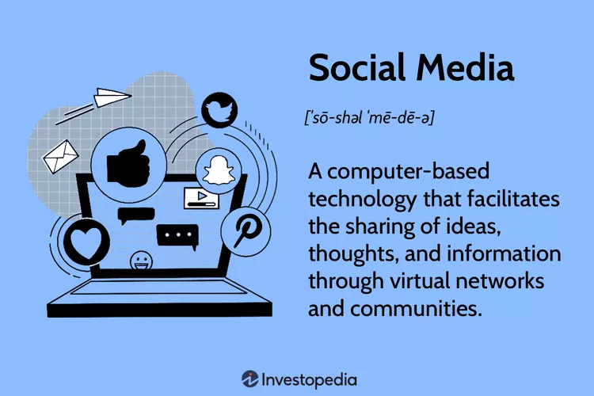

WELCOME
TO OUR WEBSITE
Social Media:
Definition, Importance, Top Websites,
and Apps

Definition:
Social media is a form of digital communication that allows users
to form online networks and communities for socializing, sharing
information, and posting user-created content.
What Is Social Media?
Social media refers to online platforms where users can share information and connect with virtual
communities through text, video, photos, and other content. As of 2024, social media had more than
five billion global users, which is equal to more than 62% of the world population.
DataReportal. “Digital 2024: Global Overview Report.”
This includes apps or websites designed for messaging and chat, social platforms
(like Facebook, Instagram, and TikTok), and community forums, such as Reddit and Discord.
Keys Takeaways:
- Social media is made up of websites, apps, and other platforms that allow users to share
information
and ideas with virtual communities through text, photos, videos, and more.
- It is used by more than 5 billion people globally for personal and professional reasons.
- Social media has been credited with connecting users, allowing for community building and
sharing
important information. - Critics say social media damages adolescents' mental health, facilitates misinformation,
and increases opportunities for child sexual abuse. - The largest social media platforms are Facebook, YouTube, WhatsApp, Instagram, and TikTok.
Origins and Evolution of Social Media
Early social media platforms, such as MySpace and LiveJournal, were designed for people to connect withfriends and family. MySpace, which allowed users to create personal profile pages and share information about
themselves, became the first network to reach one million active monthly users in 2004.
LiveJournal, a platform where users could share journal-like entries with either public or private networks, reached
over 2.5 million active accounts in 2005.
Social media use grew rapidly in the 2000s and early 2010s as Facebook and X (formerly Twitter) became popular.
Like MySpace, Facebook users create profiles to share information about themselves, while other users leave comments.
Initially used for socializing among college-age users, social media became popular with younger and older users.
In 2006, X's launch included its feed feature, where posts from accounts that a user followed were aggregated onto a
single page.
History. "2006: Twitter Launches."
Facebook launched its own News Feed feature.
The news feed became a standard feature for many social media platforms.
More users began posting links to external sites, where news stories, current events, and product pages could be
shared with personal updates. Users could interact with each other's content, including liking, sharing, and
commenting on posts.
During this time, social media platforms began adding business-specific profile pages and the
ability to
purchase targeted
ads that other users would see, making them more business-friendly and increasing revenue for the
platforms.
Social media users began spending more time scrolling through feeds and consuming daily news and
commentary on current
events. By 2024, just over half (54%) of adults in the U.S. said they get their news from social
media
"sometimes" or "often."
Only 28% of U.S. adults say they "never" get the news from social media.
Globally, only 22% of consumers get their news directly from news websites or apps, with younger
news
consumers the least
likely to do so.
How Social Media Is Used Today
As users continued to spend more time on social media sites, different types of social media platforms evolved. They can be broadly categorized as:- Social networks: Facebook, NextDoor
- Microblogging: X, BlueSky, Mastodon, Threads
- Long-form blogging: Substack, Ghost
- Professional networking: LinkedIn, Behance, ResearchGate
- Video and photo sharing: Instagram, TikTok, YouTube, Snapchat
- Visual curation and search: Pinterest, Houzz, DeviantArt
- Messaging: WhatsApp, Signal, WeChat, Marco Polo
- Community forums: Reddit, Discord, Clubhouse
Platforms are oriented toward different uses and users. Some may be used purely for socializing, while others are
oriented toward professional network building or job-hunting. Some platforms allow users to connect with others who
share their political views or leisure hobbies.
Many social media users are acting in a professional capacity. For instance:
- Actors and writers can use social media to connect with fans of their work
- Politicians use them to communicate with constituents and voters
- Nonprofit organizations may use them to promote charitable causes or collect donations
- Government agencies can use social media to communicate with the public during emergencies.
itself, separate from any outside work that the social media posts are promoting. These types of social media users are
generally referred to as influencers or content creators. One in five social media users consider themselves professional
content creators.
Social media is also an important form of marketing for many companies. Businesses use social media to identify and capitalize on
consumer trends, engage with customers, collect consumer data, and pay for targeted advertising. Many also work with influencers,
paying content creators to promote their products or services directly to the influencers' audience or followers.
Advantages and Disadvantages of Social Media
Pros
- Connectivity
- Build community
- Affordable advertising
Cons
- Disinformation/misinformation
- Sleep disruption
- Mental health impact
- Child sexual exploitation
Advantages Explained
- Connectivity: Social media platforms allow people to access global information and connect with
friends
and family at a distance. It can allow users to find niche communities around their interests or current
needs, such as neighborhood forums or job searching. - Build community: Using social media is correlated to having more friends and a personal network
with greater diversity,
especially in emerging economies. Social media users are more likely to interact with those who are different from them
across categories of income, political party, religion, or ethnicity. - Affordable advertising: Small businesses and creators can reach potential customers at low price
points through targeted ads
and influencer marketing. More than 200 million small businesses use Facebook.
In 2024, online advertising, including social media and search advertising, accounted for 59% of global ad spending; that number
is projected to grow to 61% in 2026.
Disadvantages Explained
- Disinformation/misinformation: The ease of sharing links and posts on social media can
facilitate the spread of
disinformation or misinformation. For instance, misinformation about Hurricane Helene hampered recovery efforts
in the southern U.S. and harmed local communities impacted by the disaster in 2024.
- Sleep disruption: Social media use is correlated with less and poor quality sleep, especially
among teens and young adults.
Poor sleep is associated with a variety of health problems, including heart disease, high blood pressure, diabetes, obesity, and depression. - Mental health impact: Research has also found a direct correlation between more social media use
and higher rates of depression among teens.
Other mental health concerns related to social media use include bullying, peer pressure, spreading rumors about peers and friends, and the
creation of unrealistic expectations based on exposure to other people's lives. - Child sexual abuse: In 2022, research found that more than one in six U.S. children experience
sexual abuse online.
Studies in other countries have found even higher rates. Social media can provide a platform for child sexual abuse
and exploitation including grooming, stalking, sharing of explicit materials, revenge pornography, and nonconsensual sexting.
Top 10 Global Social Media Platforms
The average social media user spends two hours and 21 minutes each day on social media, visiting an average of 6.8 different social mediaplatforms each month. These were the most widely used social media providers as of February 2025, according to DataReportal:
- Facebook (3.07 billion users)
- YouTube (2.53 billion users)
- WhatsApp (2 billion users)
- Instagram (2 billion users)
- TikTok (1.59 billion users)
- WeChat (1.38 billion users)
- Telegram (950 million users)
- Facebook Messenger (947 million users)
- Snapchat (850 million users)
- Douyin (766 million users)
with 586 million users worldwide, while Pinterest was 16th with 537 million.
The Bottom Line
Since the early 2000s, social media has reshaped how people interact online, impacting community building, news, politics,entertainment, and advertising. Despite the downsides, including the spread of misinformation and child sexual exploitation,
social media continues to grow each year.
With more than five billion users worldwide spending an average of over two hours per day on its apps and websites,
social media has become one of the most important ways for individuals, businesses, creators, and politicians to
connect with one another.